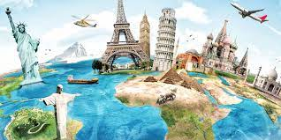
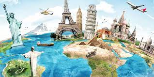
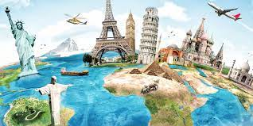

Começe sua jornada


O momento mais feliz da vida humana penso eu, é uma partida em terras desconhecidas.
 

Aqui estão minhas citações favoritas de viagens e aventuras.
O momento mais feliz da vida humana penso eu, é uma partida em terras desconhecidas.
